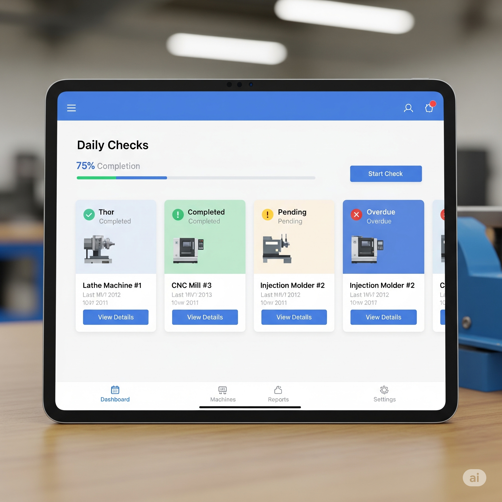
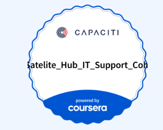
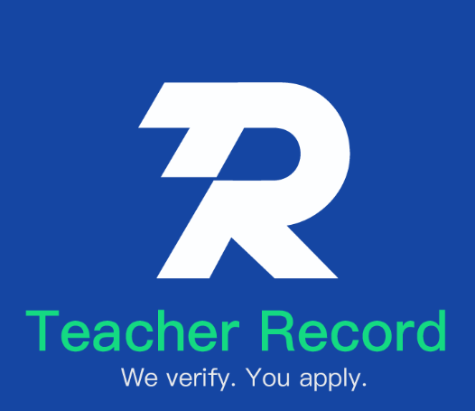
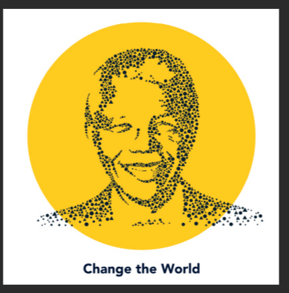

Sanelise Matanzima
IT Support Specialist | Psychology Graduate | Emerging AI Innovator
A dynamic psychology graduate passionate about bridging human understanding with emerging technologies. Dedicated to building ethical, human-centered solutions through intelligent design.
About Me
I’m Sanelise Matanzima, a dedicated and curious professional who loves learning how technology can improve everyday life.
My journey began in psychology, where I developed a strong understanding of human behavior, communication, and emotional intelligence. That curiosity for how people interact with the world around them naturally led me into technology — where I discovered the power of digital tools to connect, educate, and empower.
Currently, I am gaining real-world experience through an **IT Support Learnership with Capaciti**. In this role, I’ve learned to troubleshoot, collaborate with teams, and provide excellent user support in dynamic environments.
Beyond my technical growth, I’ve also served as a literacy and numeracy tutor through Masinyusane, helping young learners build confidence and a love for reading. These experiences have taught me that the most impactful solutions start with empathy and understanding.
I’m continuously exploring how to integrate technology, education, and mental well-being — designing systems that are not just smart, but also kind and accessible to the people who need them most.
My goal is to use my psychology background and IT skills to create inclusive, people-first innovations that truly make a difference.
0
Projects Completed
0
Live Applications
0
AI Chatbots
0
UX/UI Prototype
My Approach
Human-Centered Design
Using psychology principles to create intuitive and accessible solutions
Technical Excellence
Building robust applications with modern tools and best practices
Ethical AI
Committed to developing fair, transparent, and beneficial AI systems
Featured Projects
A collection of AI/ML projects showcasing practical applications and technical skills

IT Master Chatbot (Botpress)
AI Learning Companion
A learning companion built for AI beginners. Simplifies complex AI concepts through conversational learning, helps users understand machine learning, neural networks, and ethical AI.
- Conversational AI learning
- Custom learning paths
- Educational resource connections

Career Canvas Smart Build
Professional Document Platform
A web-based platform designed to help users create professional career documents efficiently. Features modular templates, responsive design, and visual consistency.
- Modular customizable templates
- Responsive cross-device design
- User-centric intuitive layout

CreatiVerseAI
Creative Writing Content Generator
An AI-driven tool for generating poems, stories, and literary prompts across styles and genres. Powered by Groq API and LLaMA 3.3 70B for fast inference.
- Multi-genre content generation
- LLaMA 3.3 integration
- Fast inference optimization

Fairness Audit Wizard
AI Fairness Analysis Tool
Analytical tool to assess and visualize bias in ML models using ROUGE metrics. Interactive dashboards and bias mitigation insights included.
- Automated fairness audits
- Visual evaluation dashboards
- Bias mitigation insights

Machine Daily Check Prototype
UX/UI Prototype
Mobile-friendly prototype designed to streamline machine maintenance checks in industrial settings.
- Tablet-first interface
- Intuitive form flow
- Industrial workflow optimization
Technical Skills
A blend of technical expertise and human-centered design thinking
Technical Proficiencies
Core Competencies
Professional Certificates
Continuous learning in academic, technological, and professional development fields.

Coursera (Online) — 2025

Coursera (Online) — 2025

TEFL Professional Institute — January 2024 — Teacher Record

Nelson Mandela University — February 2020 – April 2023 — Gqeberha
Sophakama High School — January 2017 – December 2019 — Gqeberha